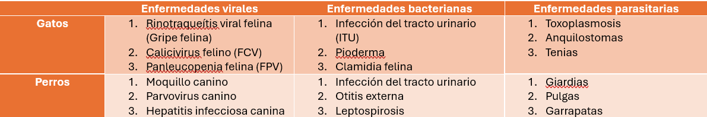
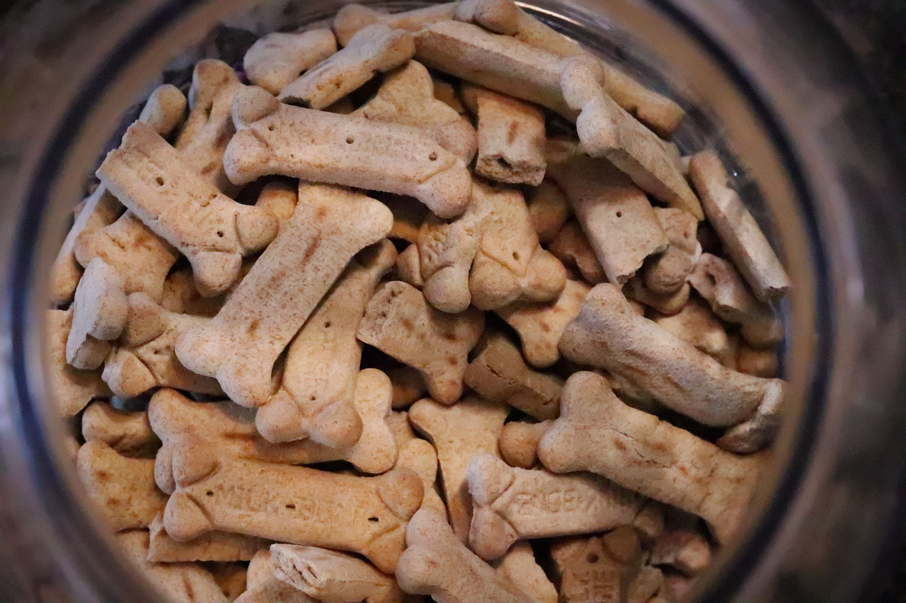

Previniendo enfermedades
Escrito por: Luciana Proaño
Fecha: 28/2/2024
Cómo cuidar a tu mascota y que ésta se mantenga sana.
Introducción
La salud de nuestra mascota es un tema de suma importancia. Un animalito exento de padecimientos indica una buena salud en todo el hogar, y permite una convivencia más feliz y enriquecedora. Por ello, en el siguiente blog se mostrarán varios tips para prevenir enfermedades comunes en perros y gatos.
Antes de comenzar, es importante repasar las 3 clases de enfermedades que tanto los perros como gatos pueden recibir.
. Enfermedades virales: Provocadas por un virus. No tienen cura, pero se pueden prevenir vacunando a las mascotas.
- Enfermedades bacterianas: Provocadas por una bacteria. Se suelen tratar con antibióticos.
Enfermedades parasitarias: Causadas por parásitos internos o externos. Se suelen tratar con antiparasitarios.
Enfermedades comunes
Autoría propia
Asiste regularmente a tu veterinario y asegúrate de cumplir con el esquema de vacunación. Además, agenda una desparasitación cada 3 meses para protegerlo de cualquier agente externo.
Dale comida saludable y balanceada a tu mascota, de acuerdo a su edad, tamaño y condiciones físicas. No le des comida de humano, ya que puede provocarle problemas estomacales, y asegúrate que sus porciones sean adecuadas para evitar sobrepeso.
Tu mascota requiere de ejercicio al igual que un humano. Los juegos y paseos le permiten liberar energía, y aumentan su felicidad. También permiten crear un espacio de conexión entre el dueño y la mascota. El ejercicio regular, sin importar el tamaño, raza o edad, va a ayudar a tu mascota a crecer fuerte y a tener una larga vida alegre.
Cepilla regularmente los dientes de tu mascota para evitar placa y caries. Puede parecer un paso innecesario, pero la salud dental afecta directamente a la salud de todo el organismo de tu amigo.
Mantener una casa y patio limpios son determinantes para la prevención de enfermedades. Así se evita que bacterias, virus y parásitos se propaguen sin restricción y afecten la salud tuya y de tu mascota. Además, procura mantener los productos tóxicos y los alimentos fuera del alcance de tu amigo peludo.
Foto de Matthew Hamilton en Unsplash
Los animales expuestos constantemente al exterior suelen ser más propensos a enfermedades y peligros. Es por ello que es importante controlar los entornos a los que sale, especialmente durante sus primeros años de vida. Revisa que no hayan peligros cuando salgan de paseo, y que tu mascota no ingiera nada. No olvides de protegerlo en épocas de frío y de extremo calor.
Vacunar y desparasitar a tu amigo, entregarle comida saludable, ejercitarle, cuidar su salud dental y mantener un espacio seguro y limpio van a evitar cualquier problema médico en su desarrollo, para alcanzar una larga y feliz vida. Recuerda, cuidar la salud de tu mascota es cuidar la salud de tu hogar.
Gabrica. (s.f.) CONOCE CÓMO PREVENIR ENFERMEDADES EN TU MASCOTA. Recuperado el 28 de febrero del 2024 de: https://www.gabrica.cl/conoce-como-prevenir-enfermedades-en-tu-mascota/
Google. (2024). Bard (versión 1.0) [Modelo de lenguaje amplio]. https://gemini.google.com/app
Agradecimiento a las Doctoras Alegría Albán, Victoria Guapas, Carolina Joba de la clínica Care for Pets por su aporte para la creación de este blog.